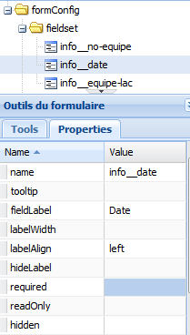

Formulaire¶
À partir de cette option, vous pouvez personnaliser le formulaire qui s’affiche pour le menu d’édition.

Figure 24 : Option formulaire du menu configuration.
La fenêtre du formulaire est organisée en trois grandes sections :
Les éléments du formulaire :

Figure 25 : la fenêtre des éléments du formulaire.
Les éléments du formulaire (côté haut-gauche de la fenêtre) affichent dans une arborescence les champs actifs sur les formulaires d’édition.
À partir de cette fenêtre, il est possible de personnaliser l’affichage et l’ordre d’apparition de champs sur le formulaire. L’ordre d’apparition de champs est défini selon la position de l’objet dans l’arborescence. Il est possible aussi de regrouper les champs à l’intérieur des contenants de type « Fieldset » ou « HTMLset ».
les icônes de cette fenêtre sont :
 : pour enregistrer les modifications du formulaire.
: pour enregistrer les modifications du formulaire. : pour rafraîchir l’aperçu du formulaire (côté droit de la fenêtre)
: pour rafraîchir l’aperçu du formulaire (côté droit de la fenêtre) : pour supprimer un objet dans l’arborescence.
: pour supprimer un objet dans l’arborescence. : pour cacher la fenêtre des éléments du formulaire de l’interface.
: pour cacher la fenêtre des éléments du formulaire de l’interface. : icône attribuée aux champs.
: icône attribuée aux champs. : icône attribuée aux contenants de type fieldset et HTMLset.
: icône attribuée aux contenants de type fieldset et HTMLset.
Les outils du formulaire :

Figure 26 : les outils du formulaire.
La fenêtre des outils (Tools) du formulaire (côté bas-gauche de la fenêtre, donne accès aux outils permettant de créer et de personnaliser un formulaire. Les outils sont organisés dans une arborescence où ils se retrouvent les champs, les contenants et les détails pour une vue.
L’onglet des propriétés (Properties) donne accès aux propriétés de personnalisation de l’objet sélectionné dans la fenêtre des éléments.
Pour l’onglet Outils :
- Fields ( Champs ) :
Le dossier Fields contient la liste complète des champs pour l’objet sélectionné ( un projet, un modèle, une entité, une propriété, une relation ou une vue). Dans le cas d’une vue, les champs correspondent aux propriétés ou attributs des entités crées par l’utilisateur. On y retrouve aussi des champs crées par l’application du prototypeur comme la date de la dernière modification, le nombre de l’équipe ou groupe à qui appartient le projet, etc.
- Containers ( Contenants ):
Le dossier Containers est composé de deux types de contenants qui servent à regrouper plusieurs champs dans le formulaire.
- Un contenant de type Fieldset crée un contour autour des champs.
- Un contenant de type HTMLset c’est un éditeur de texte HTML. Le contenant HTMLset s’utilise pour les champs de type de base « texte » que stockent des chaînes de 65, 535 caractères maximum.
- Details ( Détails ) :
Le dossier Détails contient les détails configurés pour les projets, les modèles, les entités, les propriétés et les relations. Quand un détail est ajouté au formulaire, ce détail s’affiche dans la forme d’une grille.
Note
voir annexe pour la signification des champs de l’onglet Propriétés.
- L’aperçu du formulaire :
L’espace réservé à l’aperçu du formulaire (côté droit de la fenêtre) permet de prévisualiser les modifications appliquées au formulaire. Les modifications sont affichées en temps réel, cela veut dire que si vous changez l’ordre des champs ou que vous regroupez plusieurs champs dans un fieldset, vous verrez dans l’espace de l’aperçu le résultat final quasi instantanément.
Personnaliser les formulaires¶
Personnaliser un contenant de type Fieldset :

Figure 27 : Personnaliser un contenant de type Fieldset.
- Sélectionnez le fieldset à personnaliser de l’arborescence.
- Cliquez sur l’onglet « Properties » de la fenêtre Outils du formulaire.
- Éditez les valeurs des propriétés en double-cliquant sur les champs pour les modifier. Enregistrez les changements au formulaire en cliquant sur le bouton
Enregistrer formulaire.
Ajouter des éléments au formulaire :

Figure 28 : Ajouter des éléments au formulaire.
- Ajouter un champ dans un fieldset :
- Cliquez sur l’onglet Tools de la fenêtre Outils du formulaire.
- Cliquez sur le plus « + » situé du côté gauche du dossier « Fields » pour visualiser la liste de champs disponibles.
- Sélectionnez de la liste le champ à ajouter au fieldset.
- Glissez et déposez le champ à l’intérieur du fieldset.
- Enregistrez les changements au formulaire en cliquant sur le bouton
- Ajouter un contenant fieldset ou HTMLset :
- Cliquez sur l’onglet Tools de la fenêtre Outils du formulaire.
- Cliquez sur le plus « + » situé du côté gauche du dossier « Containers » pour visualiser la liste de contenants disponibles.
- Sélectionnez de la liste le type de contenant à ajouter à l’arborescence.
- Glissez et déposez le contenant à l’endroit désiré de l’arborescence. Notez qu’il est possible d’insérer un contenant à l’intérieur d’un autre contenant.
- Enregistrez les changements au formulaire en cliquant sur le bouton
- Ajouter un détail à l’arborescence :
Les détails prennent automatiquement la forme d’une grille (comme la grille principale de l’application). La grille n’est pas personnalisable à partir de la fenêtre formulaire.
- Cliquez sur l’onglet Tools de la fenêtre Outils du formulaire.
- Cliquez sur le plus « + » situé du côté gauche du dossier « Details » pour visualiser la liste de détails disponibles.
- Sélectionnez de la liste le détail à ajouter à l’arborescence.
- Glissez et déposez le contenant à l’endroit désiré de l’arborescence.
- Enregistrez les changements au formulaire en cliquant sur le bouton
Personnaliser les champs du formulaire :
Figure 29 : personnaliser les champs.
- Sélectionnez le champ à personnaliser.
- Cliquez sur l’onglet Properties de la fenêtre Outils du formulaire.
- Éditez les valeurs des propriétés et enregistrez les changements au formulaire en cliquant sur le bouton
Note
voir annexe pour la signification des champs de l’onglet Propriétés.
- Changer l’ordre d’apparition des champs du formulaire :
- sélectionnez le champ;
- glissez-le jusqu’au l’emplacement désiré dans le même contenant;
- vous pouvez déplacer un champ d’un contenant à l’autre de la même façon.